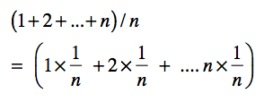

- 01 二进制：不了解计算机的源头，你学什么编程.md
- 02 余数：原来取余操作本身就是个哈希函数.md
- 03 迭代法：不用编程语言的自带函数，你会如何计算平方根？.md
- 04 数学归纳法：如何用数学归纳提升代码的运行效率？.md
- 05 递归（上）：泛化数学归纳，如何将复杂问题简单化？.md
- 06 递归（下）：分而治之，从归并排序到MapReduce.md
- 07 排列：如何让计算机学会“田忌赛马”？.md
- 08 组合：如何让计算机安排世界杯的赛程？.md
- 09 动态规划（上）：如何实现基于编辑距离的查询推荐？.md
- 10 动态规划（下）：如何求得状态转移方程并进行编程实现？.md
- 11 树的深度优先搜索（上）：如何才能高效率地查字典？.md
- 12 树的深度优先搜索（下）：如何才能高效率地查字典？.md
- 13 树的广度优先搜索（上）：人际关系的六度理论是真的吗？.md
- 14 树的广度优先搜索（下）：为什么双向广度优先搜索的效率更高？.md
- 15 从树到图：如何让计算机学会看地图？.md
- 16 时间和空间复杂度（上）：优化性能是否只是“纸上谈兵”？.md
- 17 时间和空间复杂度（下）：如何使用六个法则进行复杂度分析？.md
- 18 总结课：数据结构、编程语句和基础算法体现了哪些数学思想？.md
- 19 概率和统计：编程为什么需要概率和统计？.md
- 20 概率基础（上）：一篇文章帮你理解随机变量、概率分布和期望值.md
- 21 概率基础（下）：联合概率、条件概率和贝叶斯法则，这些概率公式究竟能做什么？.md
- 22 朴素贝叶斯：如何让计算机学会自动分类？.md
- 23 文本分类：如何区分特定类型的新闻？.md
- 24 语言模型：如何使用链式法则和马尔科夫假设简化概率模型？.md
- 25 马尔科夫模型：从PageRank到语音识别，背后是什么模型在支撑？.md
- 26 信息熵：如何通过几个问题，测出你对应的武侠人物？.md
- 27 决策树：信息增益、增益比率和基尼指数的运用.md
- 28 熵、信息增益和卡方：如何寻找关键特征？.md
- 29 归一化和标准化：各种特征如何综合才是最合理的？.md
- 30 统计意义（上）：如何通过显著性检验，判断你的A_B测试结果是不是巧合？.md
- 31 统计意义（下）：如何通过显著性检验，判断你的A_B测试结果是不是巧合？.md
- 32 概率统计篇答疑和总结：为什么会有欠拟合和过拟合？.md
- 33 线性代数：线性代数到底都讲了些什么？.md
- 34 向量空间模型：如何让计算机理解现实事物之间的关系？.md
- 35 文本检索：如何让计算机处理自然语言？.md
- 36 文本聚类：如何过滤冗余的新闻？.md
- 37 矩阵（上）：如何使用矩阵操作进行PageRank计算？.md
- 38 矩阵（下）：如何使用矩阵操作进行协同过滤推荐？.md
- 39 线性回归（上）：如何使用高斯消元求解线性方程组？.md
- 40 线性回归（中）：如何使用最小二乘法进行直线拟合？.md
- 41 线性回归（下）：如何使用最小二乘法进行效果验证？.md
- 42 PCA主成分分析（上）：如何利用协方差矩阵来降维？.md
- 43 PCA主成分分析（下）：为什么要计算协方差矩阵的特征值和特征向量？.md
- 44 奇异值分解：如何挖掘潜在的语义关系？.md
- 45 线性代数篇答疑和总结：矩阵乘法的几何意义是什么？.md
- 46 缓存系统：如何通过哈希表和队列实现高效访问？.md
- 47 搜索引擎（上）：如何通过倒排索引和向量空间模型，打造一个简单的搜索引擎？.md
- 48 搜索引擎（下）：如何通过查询的分类，让电商平台的搜索结果更相关？.md
- 49 推荐系统（上）：如何实现基于相似度的协同过滤？.md
- 50 推荐系统（下）：如何通过SVD分析用户和物品的矩阵？.md
- 51 综合应用篇答疑和总结：如何进行个性化用户画像的设计？.md
- 导读：程序员应该怎么学数学？.md
- 开篇词 作为程序员，为什么你应该学好数学？.md
- 数学专栏课外加餐（一） 我们为什么需要反码和补码？.md
- 数学专栏课外加餐（三）：程序员需要读哪些数学书？.md
- 数学专栏课外加餐（二） 位操作的三个应用实例.md
- 结束语 从数学到编程，本身就是一个很长的链条.md
19 概率和统计：编程为什么需要概率和统计？
你好，我是黄申。
通过第一个模块的学习，我想你对离散数学在编程领域中的应用，已经有了比较全面的认识。可以看出来，数据结构和基础算法体现的大多数都是离散数学的思想。这些思想更多的时候是给我们提供一种解决问题的思路，在具体指导我们解决问题的时候，我们还需要更多的数学知识。
比如说，在机器学习、数据挖掘等领域，概率统计就发挥着至关重要的作用。那关于概率统计，我们需要掌握哪些知识呢？这些知识究竟可以用在什么地方呢？第二模块的第一节，我们就来聊聊这些问题，让你对这一模块的学习做到心中有数。
概率和统计里有哪些需要掌握的概念？
在第一个模块中，我们认为所有事件都是一分为二的，要么必然发生，要么必然不发生。换句话说，事件的发生只有必然性，没有随机性。但是现实生活中，我们常常会碰到一些模棱两可的情况。
比如，你读到一则新闻，它报道了某个娱乐圈明星投资了一家互联网公司。那么，这则报道是属于娱乐新闻，还是科技新闻呢？你仔细读了读，觉得全篇大部分的内容都是讲述这家互联网企业的发展，而只有少部分的内容涉及了这位明星的私生活。你可能会说，这篇新闻80%的可能属于科技新闻，只有20%的可能属于娱乐新闻。
这里面的数字表示了事件发生的可能性。概率（Probability）就是描述这种可能性的一个数值。在概率的世界里，有很多概念。但是这几个非常基本的概念，你一定要知道。
我们用随机变量（Random Variable）来描述事件所有可能出现的状态，并使用概率分布（Probability Distribution）来描述每个状态出现的可能性。而随机变量又可以分为离散型随机变量（Discrete Random Variable）和连续型随机变量（Continuous Random Variable）。
这几个概念非常简单，但是其实也很抽象。我举个具体的例子，帮你加深印象。
假设我们使用一个随机变量x来表示新闻类型，如果在100篇新闻中，有60篇是娱乐新闻，有20篇是科技新闻，有20篇是体育新闻，那么你看到娱乐新闻的概率就是60%，看到科技新闻的概率就是20%，看到体育新闻的概率就是20%。而这三组数据就可以构成变量x的概率分布P(x)。
在这个概率分布中，我们只有一个随机变量x，现在我再添加另一个随机变量y，表示新闻属于国际的还是国内的。这个时候，新的概率分布就需要由x和y这两个变量联合起来才能决定，我们把这种概率称为联合概率（Joint Probability）。
比如说，刚才那100篇新闻中有30篇是国际新闻，而这30篇中有5篇是科技新闻，那么国际科技新闻的联合概率就是5/100=5%。不同的x和y取值的组合，就对应了不同的联合概率，我们用P(x, y)来表示。
对于离散型随机变量，通过联合概率P(x, y)在y上求和，就可以得到P(x)，这个P(x)就是边缘概率（Marginal Probability）。对于连续型随机变量，我们可以通过联合概率P(x, y)在y上的积分，推导出边缘概率P(x)。边缘概率有啥用呢？
有的时候，情况看起来很复杂，而我们其实只需要研究单个事件对概率分布的影响就可以了。这个时候，边缘概率可以帮助我们去除那些我们不需要关心的事件，把联合概率转换为非联合概率，例如从P(x, y)得到P(x)，从而忽略y事件。
对于多个随机变量，还有一个很重要的概念是条件概率。我估计很多人可能搞不清楚这个概念。我还是举例子跟你说。比如说，我们现在假设100篇中有30篇是国际新闻，而这30篇中有5篇是科技新闻，那在国际新闻中出现科技新闻的概率是多少呢？
这时候，我们就需要条件概率了。也就是某个事件受其他事件影响之后出现的概率，放到咱们的例子里，在国际新闻中出现科技新闻的概率就是5/30=16.67%，在科技新闻中出现国际新闻的概率就是5/20=25%。
说了这么多，不知道你有没有一种感觉，其实概率论研究的就是这些概率之间相互转化的关系，比如联合概率、条件概率和边缘概率。
通过这些关系，概率论中产生了著名的贝叶斯定理（Bayes’ theorem）。加上变量的独立性，我们就可以构建朴素贝叶斯（Naive Bayes）分类算法，这个算法在机器学习中的应用非常广泛，我们后面也会有一节课专门来讲。
此外，基于概率发展而来的信息论，提出了很多重要的概率，例如信息熵（Entropy）/ 香农熵（Shannon Entropy）、信息增益（Information Gain）、基尼指数（Gini）等。这些概念都被运用到了决策树（Decision Tree）的算法中。
提到概率论，就一定要提统计学。这是因为，概率和统计其实是互逆的。怎么个互逆呢？
概率论是对数据产生的过程进行建模，然后研究某种模型所产生的数据有什么特性。而统计学正好相反，它需要通过已知的数据，来推导产生这些数据的模型是怎样的。因此统计特别关注数据的各种分布、统计值及其对应的统计意义。
比如，现在有一大堆的新闻稿，我们想知道这里面有多少是娱乐新闻，有多少是科技新闻等等。我们可以先拿出一小部分采样数据，逐个来判断它属于哪个类型。比如说，分析了10篇之后，我们发现有7篇是科技新闻，2篇是娱乐新闻，1篇是体育新闻，那么从统计结果来看，三个类型的概率分别是70%、20%和10%。然后，我们根据从这个小采样得来的结论，推测出科技新闻、娱乐新闻和体育新闻所占的比例。这就是统计学要做的事情。
在真实的世界里，我们通常只能观测到一些数据，而无法事先知道，是什么模型产生了这些数据，这时候就要依赖统计学。所以，海量数据的分析、实验和机器学习，都离不开统计学。
概率和统计可以帮我们做什么？
弄清楚这些基本概念之后，我们来看看概率和统计的知识能帮我们做点什么。
首先，我还是要提到复杂度分析。你可能会奇怪，之前讨论的复杂度分析好像没有涉及概率啊。这是因为，在计算平均复杂度的时候，我们其实做了一个假设：所有情况出现的概率都是一样的。
我以最简单的查找算法为例。假设一个数组包含了n个元素，我们对其中的元素采取逐个扫描的方式，来查找其中的某个元素。如果这个元素一定会被找到，那么最好时间复杂度是O(1)，最差时间复杂度是O(n)，平均时间复杂度是O((n+1)/2)。
等等，为什么平均复杂度是O((n+1)/2)呢？我们假设一共扫描了n次，第1次扫描了1个元素，第2次扫描了2个元素，一直到第n次扫描了n个元素，那么总共的扫描次数是(1+2+…+n) = ((n+1)*n)/2，然后除以n次，得到每次扫描的元素数量平均值是(n+1)/2，所以时间复杂度就是O((n+1)/2)。
我把上述求和式改写成下面这样：

如果1/n是每种情况发生的概率，那么平均的扫描次数就是，不同情况下扫描次数按照概率进行的加权平均。问题来了，为什么这n种情况发生的概率都是1/n呢？这是因为之前我们做了一个默认的假设，我们每种情况发生的概率是一样的。但在实际生活中，概率很可能不是均匀分布的。
比如说，一个网站要对它的用户发放优惠券，那我们就需要先找到这些用户。我们用一个长度为n的数组代表某个网站的用户列表。我们假设第一个注册用户ID是1，第二个注册用户的ID是2，以此类推，最近刚刚注册的用户ID为n。
如果网站的发放策略是倾向于奖励新用户，那么被查找的用户ID有很大的概率会非常接近n，因此平均复杂度就会非常接近O(n)。相反，如果网站的发放策略是倾向于奖励老用户，那么搜索的用户ID有很大的概率是非常接近1的，因此平均复杂度会非常接近O(1)。
你可以看到，现实中每种情况出现的可能性是不一样的，这也就意味着概率分布是不均匀的。而不均匀的概率分布，最终会影响平均复杂度的加权平均计算。因此，要想获得更加准确的复杂度分析结果，我们必须要学习概率知识。
除此之外，概率和统计对于机器学习和大数据分析而言更为重要。
对于机器学习而言，统计的运用是显而易见的。机器学习中的监督式学习，就是通过训练样本，估计出模型的参数，最后使用训练得出的模型，对新的数据进行预测。通过训练样本来估计模型，我们可以交给统计来完成。在机器学习的特征工程步骤中，我们可以使用统计的正态分布，标准化（standardization）不同取值范围的特征，让它们具有可比性。
此外，对机器学习算法进行效果评估时，A/B测试可以减少不同因素对评测结果的干扰。为了获得更可靠的结论，我们需要理解统计意义，并为每个A/B测试计算相应的统计值。
最后，概率模型从理论上对某些机器学习算法提供了支持。朴素贝叶斯分类充分利用了贝叶斯定理，使用先验概率推导出后验概率，并通过变量之间相互独立的假设，把复杂的计算进行大幅简化。简化之后，我们就可以把这个算法运用在海量文本的分类任务上。
而决策树使用了信息熵和信息增益，挑出最具有区分力的条件，构建决策树的结点和分支。这样构建出的树，不仅分类效率更高，而且更利于人脑的理解。谷歌的PageRank算法利用马尔科夫链的概率转移，有效地刻画了人们浏览互联网的行为，大幅提升了互联网搜索的体验。
学习这部分内容，需要做哪些准备？
听我说了这么多专栏的内容，你是不是有点担心，专栏的内容太深奥，不好理解。甚至在想，有没有必要做些准备？
学习不是件容易的事，因此进步的过程，从来不会轻松。努力需要你自己来，但是我也会从我的角度出发，助力你的学习。我会争取讲清楚每个知识点背后的前因后果，以及不同知识点之间的联系，避免平铺直叙地罗列一堆理论和公式。
但是，这部分内容，有公式是不可避免的，我尽量只保留那些最核心的公式。因此，即使你之前不太了解概率和统计，也没有关系。只有跟着我的节奏，搞懂每一节的重点，相信你很快就能领悟其中的精髓。
另外，我们无法脱离应用来讲知识，不然就本末倒置了。毕竟，我们学任何知识，都是为了用的。机器学习的知识纷繁复杂，涉及广泛，很多问题甚至是跨学科、跨领域的。
不过，你不用担心，这里面会有太多看不懂的名词。我在讲解的时候，尽量给你抽象出最核心的部分，讲清楚来龙去脉，让你了解它整体的运作方式，不影响你对核心知识点的吸收。
当然，你可以适度地补一些概率知识，这样理解起来会更快。我在之前的加餐三中推荐了几本书，你可以找来看看，了解一些基本概念。另外，你可以准备一些实际工作和项目中的问题。例如，你之前参与的任务，哪些可以使用概率论来解决？碰到的难题有哪些？你是如何解决的？带着这些问题，再来看我的专栏，并且多在留言区写下你的疑问和收获，这样效果会更好。
小结
概率中的概念看起来很多，但是，其实最重要就是你耳熟能详的这几个：随机变量、概率分布、联合概率、条件概率和边缘概率。它们是整个概率的基础，我后面会详细来讲。
通过这些概念之间的相互推导，我们可以得到贝叶斯定理，这是朴素贝叶斯等系列算法的核心。而在概率基础之上发展而来的信息论，定义了信息熵、信息增益和基尼指数等，构成了决策树等系列算法的核心。
概率研究的是模型如何产生数据，统计研究的是如何通过数据来推导其背后的模型。所以说，概率和统计其实是互逆的。
概率和统计的运用非常多，我这里主要讲了三个方面。第一，概率可以帮助我们进行更精准的复杂度分析；第二，概率统计更多是用在机器学习和大数据分析中；第三，概率统计还可以用在各种机器学习的算法中。这些内容，在之后的章节我会进行非常详细地讲解。
思考题
之前你对概率统计的认识是什么样的呢？对这块内容，你觉得最难的是什么？
欢迎留言和我分享，也欢迎你在留言区写下今天的学习笔记。你可以点击“请朋友读”，把今天的内容分享给你的好友，和他一起精进。
© 2019 - 2023 Liangliang Lee. Powered by gin and hexo-theme-book.